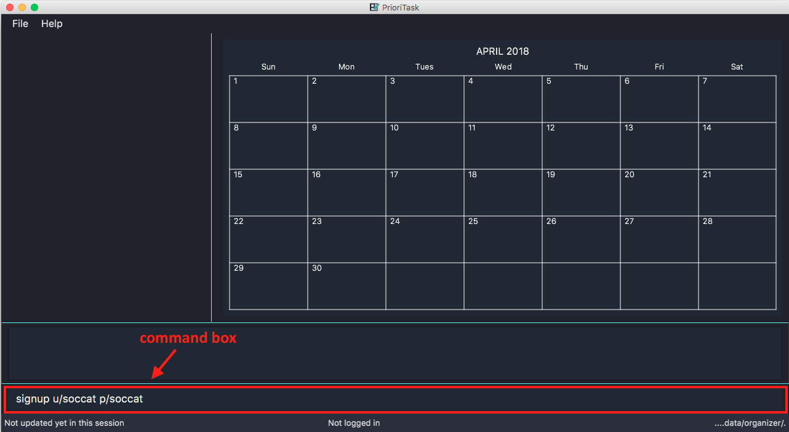
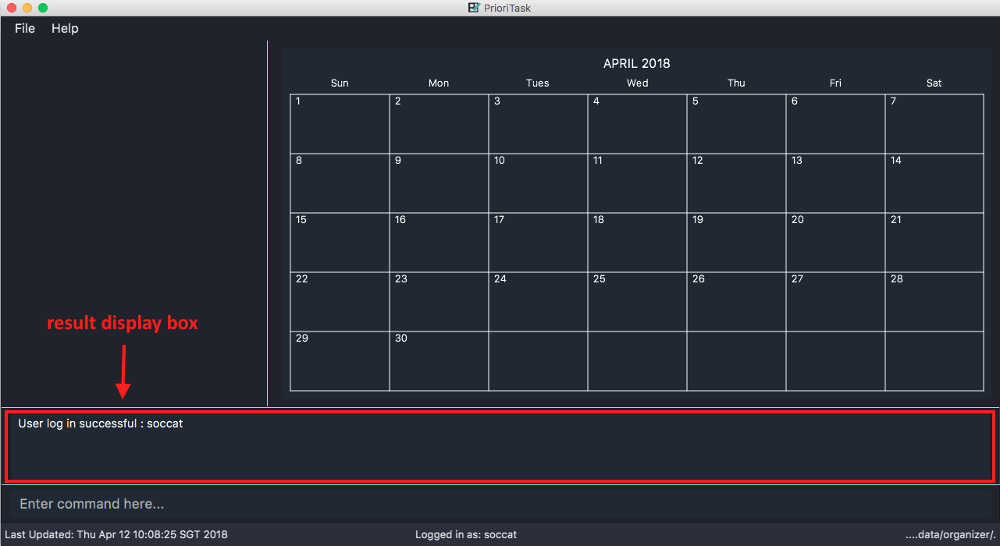

By: CS2103JAN2018-W13-B4 Since: March 2018 Licence: MIT
- 1. Introduction
- 2. Getting Started
- 3. Using PrioriTask
- 4. User Features
- 4.1. Viewing help :
help - 4.2. Signing up:
signuporsu[since v1.3] - 4.3. Logging in:
loginorin[since v1.4] - 4.4. Adding question:
addqa[since v1.4] - 4.5. Retrieving question for user’s password:
forgotpasswordorfp[since v1.4] - 4.6. Answering question:
answerorans[since v1.4] - 4.7. Deleting an account
[coming in v2.0] - 4.8. Exiting the program :
exit
- 4.1. Viewing help :
- 5. Task Management Features
- 6. Subtask Management Features
- 7. Calendar Features
- 8. PrioriTask Features
- 9. Reminders
[coming in v2.0] - 10. FAQ
- 11. Command Summary
1. Introduction
PrioriTask is a desktop task management application. It is not just any task management application, but a combination of the to-do list, calendar and reminder features, with an added bonus of an automatic updating and sorting of your tasks based on priority levels. It helps you keep track of your tasks, while providing you with at-a-glance views of upcoming tasks by day, week or month. PrioriTask is optimized for those who prefer to work with a Command Line Interface (CLI) while still having the benefits of a Graphical User Interface (GUI).
With PrioriTask, you can:
-
Keep track of your tasks and their deadlines, with reminders of approaching deadlines and at-a-glance views of upcoming tasks by day, week or month.
-
Manage your tasks' priorities with our automatic updating and sorting feature, so that you will never have to worry about deciding which task to start working on.
-
Maintain your list of tasks effectively with our easy-to-remember and user-friendly commands, which can help you get your tasks organised faster than traditional GUI applications.
Interested? Jump to [Quick Start] to get started. Enjoy!
2. Getting Started
This section explains how to download, launch, and start using PrioriTask.
2.1. Setting Up
-
Ensure that you have Java
1.8.0_60or later installed in your computer. You may download the latest version of Java here.PrioriTask works best on Java 1.8.0_60or later.
It will not work with earlier versions of Java 8 (i.e. Java1.8.0_51and below). -
Download the latest
organizer.jarhere. Figure 1. Downloading the latest
Figure 1. Downloading the latestorganizer.jar -
Copy the file to the folder you want to use as the home folder for PrioriTask.
-
Double-click the file to start the application. The main page should appear in a few seconds (refer to Figure 2, “PrioriTask’s main page”).
 Figure 2. PrioriTask’s main page
Figure 2. PrioriTask’s main page-
If the application is unable to start, refer to Section 10, “FAQ” for the solution.
-
-
Proceed to Section 2.2, “Signing Up” for instructions on creating an account on PrioriTask.
2.2. Signing Up
-
Type the command
signup u/USERNAME p/PASSWORDin the command box, replacing theUSERNAMEandPASSWORDwith your own.Figure 3. Signing up for an account -
Press Enter to execute the command. Your sign up will be confirmed in the result display box upon a successful registration (refer to Figure 4, “Confirmation message upon successful sign up”).
The USERNAMEandPASSWORDparameters can only take in alphabetical and numerical values. They will not accept spaces and special symbols (e.g. %, $, etc.).
A warning message will be displayed in the result display box if yourUSERNAMEorPASSWORDcontains characters that are not allowed.Figure 4. Confirmation message upon successful sign up -
Proceed to Section 2.3, “Logging In” for instructions on logging into your account on PrioriTask.
2.3. Logging In
-
Type the command
login u/USERNAME p/PASSWORDin the command box, replacing theUSERNAMEandPASSWORDwith your own.Figure 5. Logging into an account -
Press Enter to execute the command. Your login will be confirmed in the result display box (refer to Figure 6, “Confirmation message upon successful login”).
Figure 6. Confirmation message upon successful login -
Proceed to Section 3, “Using PrioriTask” to learn more about using the application, or head straight to Section 5, “Task Management Features” to start managing your tasks.
3. Using PrioriTask
This section explains the functions and usages of PrioriTask’s different features.
3.1. The Different Sections of PrioriTask
The PrioriTask application consists of six different sections (refer to Figure 7, “The Different Sections of PrioriTask”).
Given below is a quick overview of each section.
-
Menu Bar, where you will be able to,-
Exit the application (
File>Exit). -
Open the Help Window (
Help>Help F1).
-
-
Command Box, where you input the command to be executed. Press Enter to execute the command after you have finished typing. -
Result Display Box, which displays a successful or warning message depending on the command you execute. -
Task List Panel, which displays the tasks and their respective details. The tasks are organised by their priority levels, with the highest priority level at the top. -
Calendar Panel, which displays the calendar a chronic overview of the deadlines of all your tasks. It will display the current month by default. -
Status Bar Footer, which displays,-
The date and time of the last time you have made changes to the data.
-
The total number of tasks being shown in the
Task List Panel. -
The folder address of where your data file is being stored.
-
3.2. Command Format
PrioriTask is a CLI application. All features are executed primarily via the command box.
In the following sections, you will be introduced to several commands and their command formats. Here are a few things to take note of:
-
The command word and alias are case-sensitive.
-
Typing
helpexecutes the command. -
Typing
Help,heLporHELPdoes not execute the command.
-
-
Words in
UPPER_CASEare the parameters to be supplied by the user.-
E.g. In
add n/NAME,NAMEis a parameter which can be used asadd n/CS2103T Developer Guide.
-
-
Items in square brackets are optional.
-
E.g
n/NAME [t/TAG]can be used asn/CS2103T Developer Guide t/CS2103or asn/CS2103T Developer Guide.
-
-
Items with
… after them can be used multiple times including zero times.-
E.g.
[t/TAG]…can be used ast/CS2103,t/CS2103 t/CS2101etc.
-
-
Parameters can be in any order.
-
E.g. If the command specifies
n/NAME p/PRIORITY_LEVEL,p/PRIORITY_LEVEL n/NAMEis also acceptable.
-
4. User Features
This section explains the commands specific to command inquiry and User account management.
4.1. Viewing help : help
Format: help
4.2. Signing up: signup or su [since v1.3]
Sign up for a PrioriTask account.
Format: signup u/USERNAME p/PASSWORD
Examples:
-
signup u/patrick p/pat19503 -
signup u/mary p/m4ry
4.3. Logging in: login or in [since v1.4]
Login to PrioriTask.
Format: login u/USERNAME p/PASSWORD
Examples:
-
login u/patrick p/pat19503 -
login u/mary p/m4ry
4.4. Adding question: addqa [since v1.4]
Add a question for password retrieval.
|
Must be currently logged in to a user account on PrioriTask. |
Format: addqa q/QUESTION a/ANSWER
Examples:
-
`addqa q/are you male? a/yes
-
addqa q/are you female? a/yes
4.5. Retrieving question for user’s password: forgotpassword or fp [since v1.4]
Retrieve question for user’s password
Format: `forgotpassword u/USERNAME `
Examples:
-
forgotpassword u/patrick -
forgotpassword u/mary
4.6. Answering question: answer or ans [since v1.4]
Answer a user’s question to retrieve the password
Format: answer u/USERNAME a/ANSWER
Examples:
-
answer u/patrick a/yes -
answer u/mary a/no
4.7. Deleting an account [coming in v2.0]
Delete a user account to stop using PrioriTask.
5. Task Management Features
This section explains what a Task is, and the commands to manage them.
Task Parameters
-
NAME-
A name can only be alphanumeric characters and spaces, and should not be blank.
-
It is compulsory to set a name.
-
-
STATUS-
A state can only be one of two values : Done or Not Done.
-
By default, every new task is marked as Not Done.
-
-
PRIORITY LEVEL-
A priority level can range from 0 (lowest) to 9 (highest).
-
It is optional to set a priority level. If the user does not specify a priority level, PrioriTask will automatically set it to its default level : 0.
-
Priority levels are automatically updated by gradual incremental steps, based on the date added, current date, and deadline.
-
If a task is still uncompleted after the deadline has passed, its priority level will be at the maximum level : 9.
-
-
DESCRIPTION-
A description can be any value (i.e. alphabet, numbers, special symbols).
-
It is optional to have a description.
-
-
DATEADDED-
A date added is in the format of YYYY-MM-DD.
-
It is automatically set upon task addition.
-
-
DATECOMPLETED-
A date completed is in the format of YYYY-MM-DD.
-
It is automatically set upon toggling a task’s completion.
-
-
DEADLINE-
A deadline is in the format of YYYY-MM-DD.
-
It is compulsory to have a deadline.
-
-
SUBTASK-
A task can have any number of subtasks (including 0).
-
It is optional to have subtasks.
-
More information about subtask parameters can be found in Section 6, “Subtask Management Features”.
-
-
TAG-
A task can have any number of tags (including 0).
-
It is optional to have tags.
-
5.1. Adding a task: add or a
Add a task to the PrioriTask.
Format: add n/NAME d/DEADLINE [p/PRIORITY_LEVEL] [des/DESCRIPTION] [t/TAG]…
Examples:
-
add n/CS2103T Developer Guide p/9 d/2018-03-02 des/Write Introduction -
add n/CS2101 Script p/8 d/2018-03-05 des/Script should be 500 words long t/CS2101
5.2. Listing all tasks : list or l
Show a list of all tasks in the PrioriTask.
Format: list
-
[Coming in v2.0] Shows a list of all tasks (regardless of status), all completed tasks, or all uncompleted tasks.
5.3. Editing a task : edit or e
Edit an existing task in the PrioriTask.
Format: edit INDEX [n/NAME] [p/PRIORITY_LEVEL] [d/DEADLINE] [des/DESCRIPTION] [t/TAG]…
-
Edits the task at the specified
INDEX. The index refers to the index number shown in the last task listing. The index must be a positive integer (i.e. 1, 2, 3, …). -
At least one of the optional fields must be provided.
-
Existing values will be updated to the input values.
-
When editing tags, the existing tags of the task will be removed (i.e adding of tags is not cumulative).
-
You can remove all the task’s tags by typing
t/without specifying any tags after it.
Examples:
-
edit 1 p/9 d/2018-12-30
Edits the priority level and deadline of the 1st task to be9and2018-12-30respectively. -
edit 2 n/CS2101 Final Assignment t/
Edits the name of the 2nd task to beCS2101 Final Assignmentand clears all existing tags.
5.4. Locating tasks [since v1.2]
Depending on the suffix (or lack of) at the end of the find command, you can find tasks whose names, descriptions and/or deadlines contain any of the given keywords.
5.4.1. Locating tasks: find or f
Find tasks whose names, descriptions and deadlines contain any of the given keywords.
Format: find KEYWORD [MORE_KEYWORDS] or f KEYWORD [MORE_KEYWORDS]
| Only the name, description and deadline are searched. |
Examples:
-
find Guide
ReturnsUser GuideandDeveloper Guide -
f CS2101 Developer User
Returns any task having names or descriptionsCS2101,Developer, orUser
5.4.2. Locating tasks by name: findn or fn
Find tasks whose names contain any of the given keywords.
Format: findn KEYWORD [MORE_KEYWORDS] or fn KEYWORD [MORE_KEYWORDS]
| Only the name is searched. |
Examples:
-
findn Guide
ReturnsUser GuideandDeveloper Guide -
fn CS2101 Developer User
Returns any task having namesCS2101,Developer, orUser
5.4.3. Locating tasks by description: finddes or fdes
Find tasks whose descriptions contain any of the given keywords.
Format: finddes KEYWORD [MORE_KEYWORDS] or fdes KEYWORD [MORE_KEYWORDS]
| Only the description is searched. |
Examples:
-
finddes Study
Returns tasks with descriptionsStudy midtermsandstudy chapter 2. -
fdes Study Update Chapter
Returns any task having descriptions containing wordsStudy,Update, orChapter.
5.4.4. Locating tasks by deadline: findd or fd
Find tasks whose deadlines contain any of the given keywords.
Format: findd KEYWORD [MORE_KEYWORDS] or fd KEYWORD [MORE_KEYWORDS]
| Only the deadline is searched. |
Examples:
-
findd 2018-03-17
Returns tasks with deadlines2018-03-17. -
fd 2018-03-17 2018-09-04 2018-03-21
Returns any task having deadlines2018-03-17,2018-09-04, or2018-03-21.
5.4.5. Locating tasks by tag [coming in v2.0]
Locate all tasks with a common tag
5.5. Deleting a task : delete or d
Delete the specified task from the PrioriTask.
Format: delete INDEX
-
Delete the task at the specified
INDEX. -
The index refers to the index number shown in the most recent listing.
-
The index must be a positive integer (i.e. 1, 2, 3, …).
Examples:
-
list
delete 2
Deletes the 2nd task in the PrioriTask. -
find Developer
delete 1
Deletes the 1st task in the results of thefindcommand.
5.6. Selecting a task : select or s
Select the task identified by the index number used in the last task listing.
Format: select INDEX
-
Selects the task and shows full details of the task at the specified
INDEX. -
The index refers to the index number shown in the most recent listing.
-
The index must be a positive integer (i.e.
1, 2, 3, …).
Examples:
-
list
select 2
Selects the 2nd task in the PrioriTask. -
find Developer
select 1
Selects the 1st task in the results of thefindcommand.
5.7. Mark task as complete: toggle or t [since v1.2]
Toggle the status of the task identified by the index number used in the last task listing
between Done and Not Done.
Format: toggle INDEX
-
Toggle the status of the task at the specified
INDEX. -
The index refers to the index number shown in the most recent listing.
-
The index must be a positive integer (i.e.
1, 2, 3, …).
Examples:
-
list
toggle 1
Toggle the first task in the PrioriTask. -
find homework
toggle 1
Toggle the first task in th result offind homeworkcommand.
6. Subtask Management Features
This section explains what a Subtask is, and the commands to manage them.
Subtask Parameters
-
NAME-
A name can only be alphanumeric characters and spaces, and should not be blank.
-
It is compulsory to set a name.
-
-
STATUS-
A state can only be one of two values : Done or Not Done.
-
By default, every new task is marked as Not Done.
-
6.1. Adding a subtask to a task : adds or as [since v1.2]
Add a subtask to an existing task.
Format: adds INDEX [n/NAME]
-
Adds the subtask at the specified
INDEX. The index refers to the index number shown in the last subtask listing. The index must be a positive integer (i.e. 1, 2, 3, …).
Example:
-
adds 1 n/Submit report
Adds a subtask with nameSubmit reportto the 1st task.
6.2. Mark subtask as complete: toggle-subtask or ts [since v1.3]
Toggle the status of the subtask identified by the index number used in the last subtask listing
between Done and Not Done.
Format: toggle-subtask TASK_INDEX SUBTASK_INDEX
-
Toggle the status of the
SUBTASK_INDEX-th subtask of task at the specified byTASK_INDEX. -
The index refers to the index number shown in the most recent listing.
-
The index must be a positive integer (i.e.
1, 2, 3, …).
Examples:
-
list
toggle-subtask 1 1
Toggles the first subtask of the first task in the PrioriTask. -
find homework
toggle-subtask 2 4
Toggles the fourth subtask of the second task in th result offind homeworkcommand.
6.3. Deleting a subtask from a task: delete-subtask or ds [since v1.3]
Delete the specified subtask from the PrioriTask.
Format: delete-subtask TASK_INDEX SUBTASK_INDEX
-
Delete the
SUBTASK_INDEX-th subtask of task at the specified bySUBTASK_INDEX. -
The index refers to the index number shown in the most recent listing.
-
The index must be a positive integer (i.e.
1, 2, 3, …).
Examples:
-
list
delete-subtask 1 1
Deletes the first subtask of the first task in the PrioriTask. -
find cleaning
delete-subtask 2 4
Deletes the fourth subtask of the second task in th result offind cleaningcommand.
6.4. Editing a subtask [coming in v2.0]
Edit the name of a subtask
6.5. Reorder subtask [coming in v2.0]
Reorder subtasks using a given condition
7. Calendar Features
The calendar allows you to have a chronic overview of the deadlines of all your tasks. Tasks on the calendar changes according to the last task listing. By default, you will view the current month when you first open PrioriTask. The diagram below (refer to Figure 8, “PrioriTask’s main page”) shows how the calendar would look like when displayed with task entries.
|
The calendar is best viewed fully-maximised on a 13” computer screen. The display of the calendar may differ from pictures on other computer screens. |

In future releases, the calendar will support,
-
Displaying of only the uncompleted tasks on the calendar.
-
Viewing of the calendar by days, weeks and years.
7.1. Go to current month: cmonth or cm [since v1.4]
Change the view of the calendar to that of the current month.
Format: cmonth
Example:
-
Current month is
April 2018
ViewsDecember 2018
cmonth
Goes toApril 2018
7.2. Go to previous month: pmonth or pm [since v1.4]
Chang the view of the calendar to that of the previous month.
Format: pmonth
Example:
-
Views
March 2018
pmonth
Goes toFebruary 2018
7.3. Go to next month: nmonth or nm [since v1.4]
Chang the view of the calendar to that of the next month.
Format: nmonth
Example:
-
Views
March 2018
nmonth
Goes toApril 2018
8. PrioriTask Features
This section explains the commands which access and manage PrioriTask data.
8.1. Listing entered commands : history
List all the commands that you have entered in reverse chronological order.
Format: history
|
Pressing the ↑ and ↓ arrows will display the previous and next input respectively in the command box. |
8.2. Undoing previous command : undo
Restore the PrioriTask to the state before the previous undoable command was executed.
Format: undo
|
Undoable commands: those commands that modify the PrioriTask’s content ( |
Examples:
-
delete 1
list
undo(reverses thedelete 1command) -
select 1
list
undo
Theundocommand fails as there are no undoable commands executed previously. -
delete 1
clear
undo(reverses theclearcommand)
undo(reverses thedelete 1command)
8.3. Redoing the previously undone command : redo
Reverse the most recent undo command.
Format: redo
Examples:
-
delete 1
undo(reverses thedelete 1command)
redo(reapplies thedelete 1command) -
delete 1
redo
Theredocommand fails as there are noundocommands executed previously. -
delete 1
clear
undo(reverses theclearcommand)
undo(reverses thedelete 1command)
redo(reapplies thedelete 1command)
redo(reapplies theclearcommand)
8.4. Saving the data
PrioriTask data is saved in the hard disk automatically after any data-altering command is called.
There is no need to save manually.
8.5. Recover past data [coming in v2.0]
Restore data from a recent date (coming in v2.0)
9. Reminders [coming in v2.0]
This section explains the commands to manage the reminder system (coming in v2.0)
10. FAQ
-
I am unable to start the application. Double-clicking on the
jarfile doesn’t work. What do I do?- For Windows Users
-
-
Find your Java JDK directory.
-
Open
Command Prompt. -
Change the directory to your Java JDK directory.
-
Execute the command
"JAVA_JDK_EXE_FILE_DIRECTORY_PATH" -jar YOUR_JAR_FILE_NAME.jar.-
E.g.
"C:\Program Files\Java\jdk1.8.0_102\bin\javaw.exe" -jar YOUR_JAR_FILE_NAME.jar
-
-
- For Mac/Linux Users
-
-
Open
Terminal. -
Execute the command
java -jar YOUR_JAR_FILE_NAME.jar.
-
-
How do I transfer my data to another computer?
Install the application in the other computer and overwrite the empty data file it creates with the file that contains the data of your previous PrioriTask folder.
11. Command Summary
11.1. User Features
-
Exit :
exit -
Help :
help -
Login :
login u/USERNAME p/PASSWORDe.g.login u/patrick p/pat12351 -
Logout :
logout -
Sign Up :
signup u/USERNAME p/PASSWORDe.g.signup u/patrick p/pat12351 -
Add Question :
addqa q/QUESTION a/ANSWERe.g.addqa q/are cats cool? a/yes -
Retrieve Question :
forgotpassword u/USERNAMEe.g.forgotpassword u/david -
Answer Question :
answer u/USERNAME a/ANSWERe.g.answer u/david a/yes
11.2. Task Management Features
-
Add :
add n/NAME [p/PRIORITY_LEVEL] d/DEADLINE [des/DESCRIPTION] [t/TAG]…
e.g.add n/CS2101 Script p/8 d/2018-03-05 des/Script should be 500 words long t/CS2101 t/PhaseA -
Clear :
clear -
Delete :
delete INDEX
e.g.delete 3 -
Edit :
edit INDEX [n/NAME] [p/PRIORITY_LEVEL] [d/DEADLINE] [des/DESCRIPTION] [t/TAG]…
e.g.edit 1 p/9 d/2018-12-30 -
Find :
find KEYWORD [MORE_KEYWORDS]orf KEYWORD [MORE_KEYWORDS]
e.g.find CS2103 update 2018-03-17-
Find Name :
findn KEYWORD [MORE_KEYWORDS]orfn KEYWORD [MORE_KEYWORDS]
e.g.findn Developer User -
Find Description :
finddes KEYWORD [MORE_KEYWORDS]orfdes KEYWORDS [MORE_KEYWORDS]
e.g.finddes study update -
Find Deadline :
findd KEYWORD [MORE_KEYWORDS]orfd KEYWORDS [MORE_KEYWORDS]
e.g.findd 2018-03-17 2018-09-07
-
-
List :
list -
Select :
select INDEX
e.g.select 2 -
Toggle :
toggle INDEX
e.g.toggle 3
11.3. Subtask Management Features
-
Add Subtask :
adds INDEX n/NAME
e.g.adds 1 n/Submit Report -
Delete Subtask :
delete-subtask TASK_INDEX SUBTASK_INDEX
e.g.delete-subtask 2 3 -
Toggle Subtask :
toggle-subtask TASK_INDEX SUBTASK_INDEX
e.g.toggle-subtask 3 2
11.4. Calendar Features
-
Go To Current Month :
cmonth -
Go To Next Month :
nmonth -
Go To Previous Month :
pmonth
11.5. PrioriTask Features
-
History :
history -
Undo :
undo -
Redo :
redo